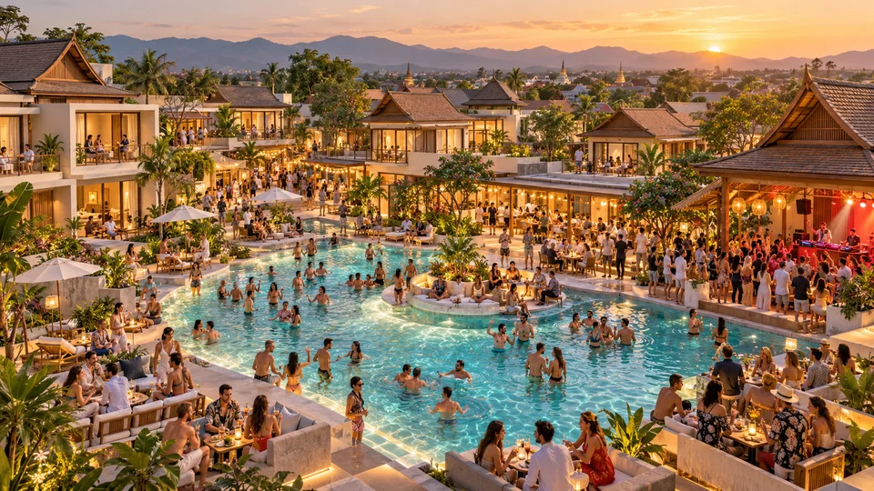
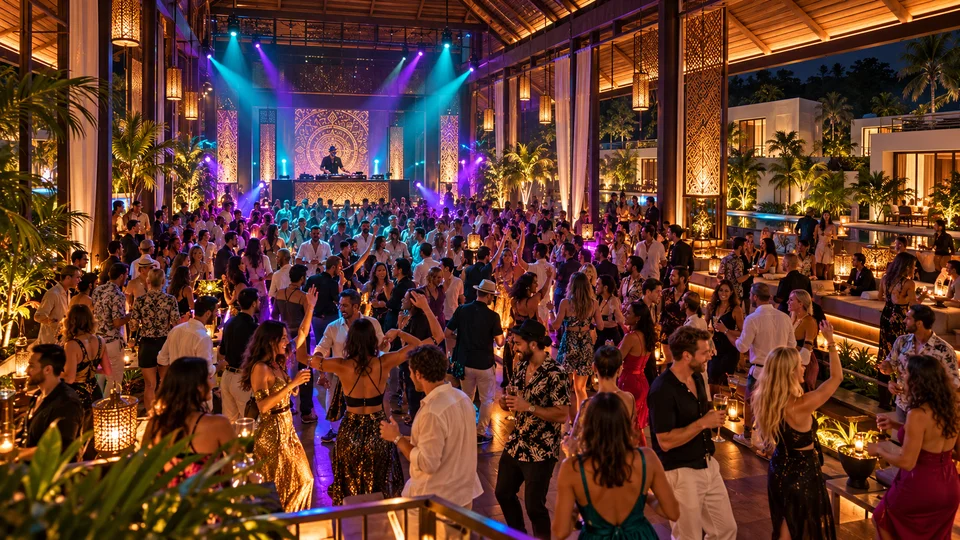
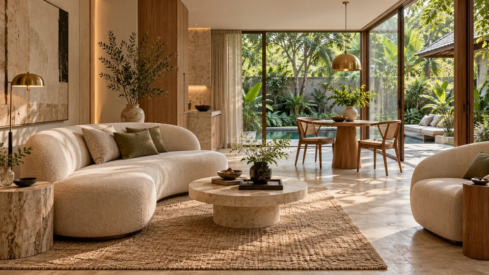
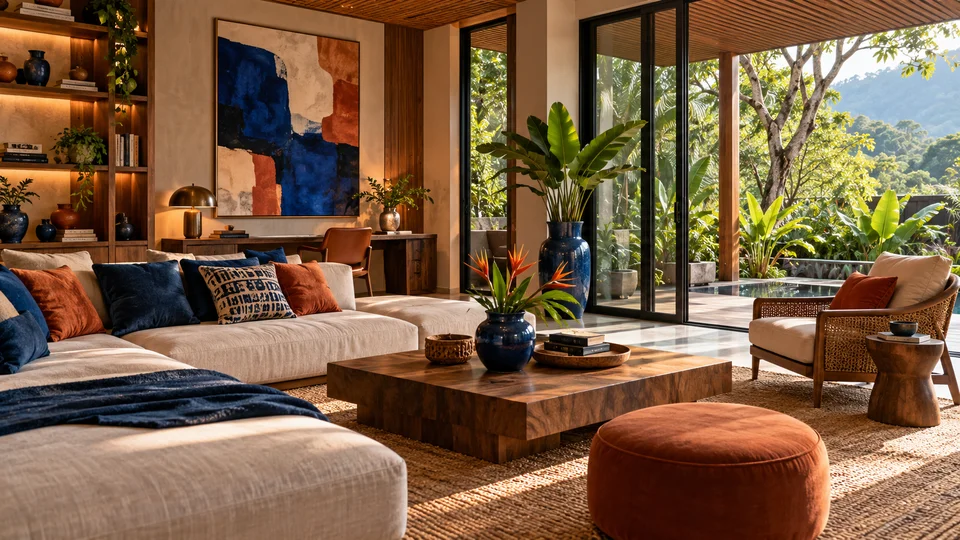
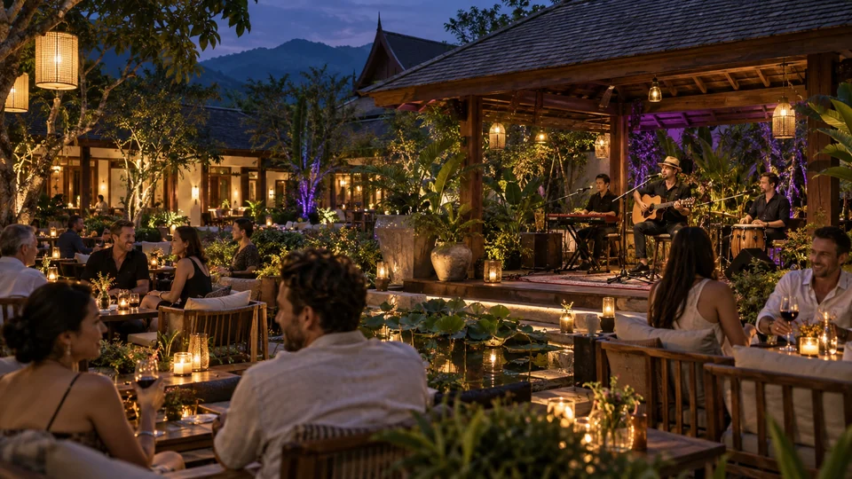
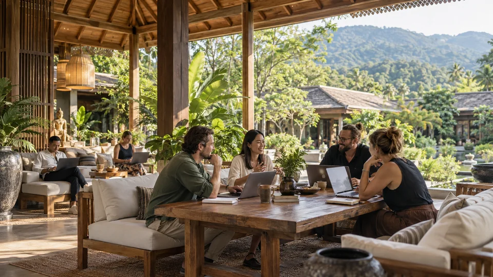
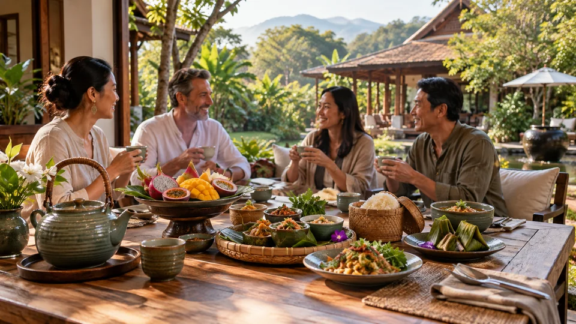
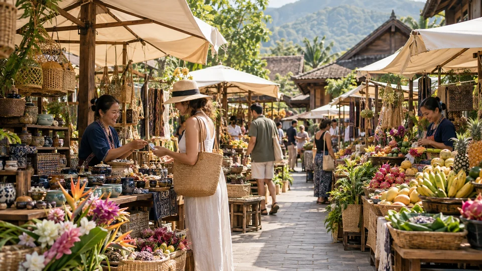
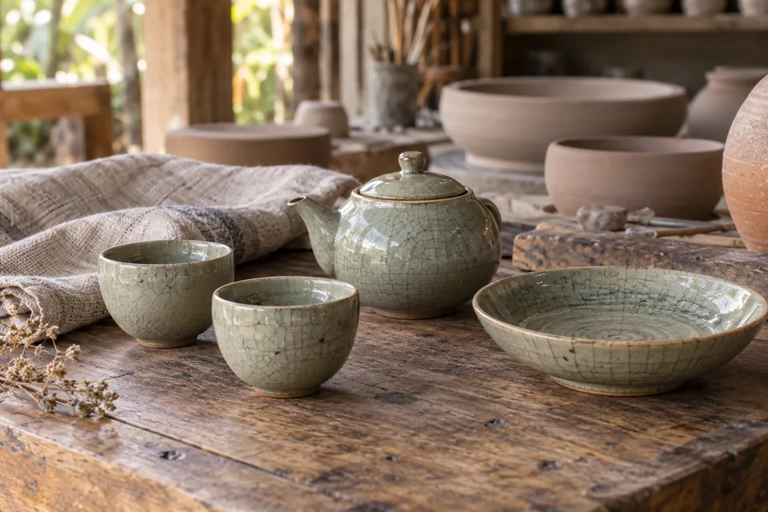

01 / POOL PARTY
함께 뛰어드는 풀파티.
풀장 곁에서 만나고. 음악에 맞춰 함께 즐기고.

BUSINESS VALLEY / CHIANG MAI
치앙마이의 휴가와 일상전 세계 IT맨·디지털노마드와 자유롭게 만나고.
소통하고 협력하고. 도모하고. 스타트 업!
01 / CELEBRATE TOGETHER
사람과 음악, 새로운 만남. 함께 즐기는 휴가의 열기.
01 / POOL PARTY
풀장 곁에서 만나고. 음악에 맞춰 함께 즐기고.

02 / CLUB NIGHT
국경을 넘어 어울리고. 같은 리듬으로 춤추고.
휴가 경험을 표현한 AI 콘셉트입니다. 실제 시설·행사·운영 시간·이용 조건은 확정 후 안내합니다.
02 / THE SPACES
활기 있는 풀사이드부터 나만의 조용한 휴식까지.
나만의 생활 공간. 취향을 발견하는 마켓.
로컬 음식과 차 한 잔으로 이어지는 대화.
낮에는 물가에서, 밤에는 음악과 함께.
생각을 나누고, 협력과 새로운 사업을 도모하다.
활기에서 잠시 벗어나 나의 속도로 쉬는 시간.
시설과 구역 구성 콘셉트입니다. 실제 위치·동선·서비스·행사 일정은 확정 후 안내합니다.
INTERIOR / DESIGN DIRECTIONS
글로벌한 휴가의 일상을 담은 세 가지 디자인 방향.

ASIAN FUSION
우드와 라탄, 셀라돈의 색으로 담은 편안함.

EUROPEAN CONTEMPORARY
밝은 석재와 부드러운 곡선이 만드는 여유.

DYNAMIC GLOBAL
과감한 색과 다양한 소재로 채운 개성.
비교를 위한 AI 디자인 시안입니다. 확정된 객실 유형·마감 사양·예약 옵션이 아닙니다.
03 / SIGNATURE SCENES
일과 휴식, 새로운 만남. 내가 바라던 치앙마이의 하루.

함께 즐기는 음악과 편안한 대화. 별장의 밤에 활기를 더합니다.

소통에서 협력으로. 새로운 사업을 함께 도모하는 만남.

차 한 잔으로 여는 아침. 함께 나누는 식탁에서 하루가 시작됩니다.
먹거리부터 손길이 담긴 소품까지. 가까운 마켓에서 내 취향을 만나는 시간을 그립니다.

풀장 곁 햇살 아래. 몸을 펴고 숨을 고르는 나만의 시간.


나무 그늘을 따라 걷는 길. 초록 풍경 곁에서 느긋한 하루를 그립니다.
이미지는 AI 공간·생활 콘셉트입니다. 실제 위치·시설·서비스는 확인 후 안내합니다.
04 / LOCAL DISCOVERIES
북부 태국의 한 그릇부터 손길이 담긴 공예까지. 별장 밖에서 만나는 치앙마이.

로컬푸드 / KHAO SOI
코코넛 커리 국물에 달걀면과 바삭한 튀긴 면을 더한, 치앙마이를 대표하는 한 그릇.
로컬푸드 / SAI UA
레몬그라스와 라임 잎, 향신료를 넣어 구운 북부 태국식 돼지고기 소시지. 찰밥을 곁들여 현지의 맛을 즐겨보세요.
MADE IN CHIANG MAI

지역 공예 / BO SANG UMBRELLAS
대나무 살과 사(Saa) 종이, 손으로 그린 문양. 치앙마이 보쌍 마을이 이어온 우산 공예를 만납니다.
지역 공예 / CELADON
은은한 녹색 유약이 돋보이는 도자기. 치앙마이 공예의 멋을 일상에 담아보세요.


지역 문화 / LANNA
치앙마이 구시가지와 사원에는 란나의 건축과 생활 문화가 이어집니다. 도시의 오랜 풍경을 천천히 만나보세요.
치앙마이 지역의 음식·공예·문화를 소개합니다. 이미지는 이해를 돕기 위해 제작한 AI 이미지입니다.
HANZCITY / CHIANG MAI